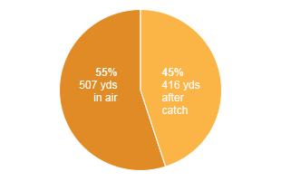
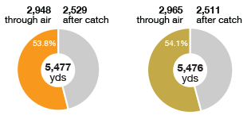

The Broncos' up-tempo offense relies on shorter passes that set up receivers for yards after the catch. Under Manning, that strategy proved record-breaking.
| Receiver | Total air yds. | Yards after catch | TDs |
|---|
Manning broke Drew Brees' record for passing yards in a season during the first half of the Broncos' regular-season finale against the Raiders. With the record in hand, Manning rested on the bench during the second half.
| Manning 2013 | Brees 2011 | |
|---|---|---|
| 5,477 | Total passing yards | 5476 |
| 2,948 | Yards through air | 2965 |
| 2,529 | Yards after catch | 2511 |
| 115.1 | QB rating | 110.6 |
| 1,156 | Total offense plays * | 1,117 |
| 37 | Age | 32 |
Breaking Brady's record of 50 touchdowns in a year was a reclamation project of sorts. Manning owned the record for three years after throwing for 49 TDs in 2004.
| Manning 2013 | Brady 2007 | |
|---|---|---|
| 55 | Passing TDs | 50 |
| 659 | Pass attempts | 578 |
| 450 | Pass completions | 398 |
| 115.1 | QB rating | 117.2 |
| 1,156 | Total offense plays * | 1,058 |
| 37 | Age | 30 |
Manning's been deadly from anywhere on the field. Here's a look at each of his 55 touchdown passes this season.